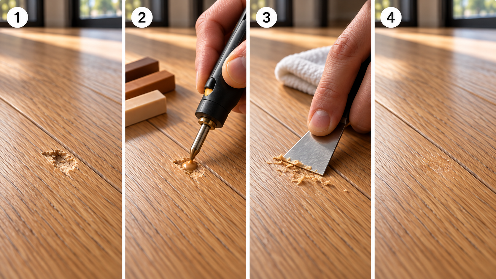
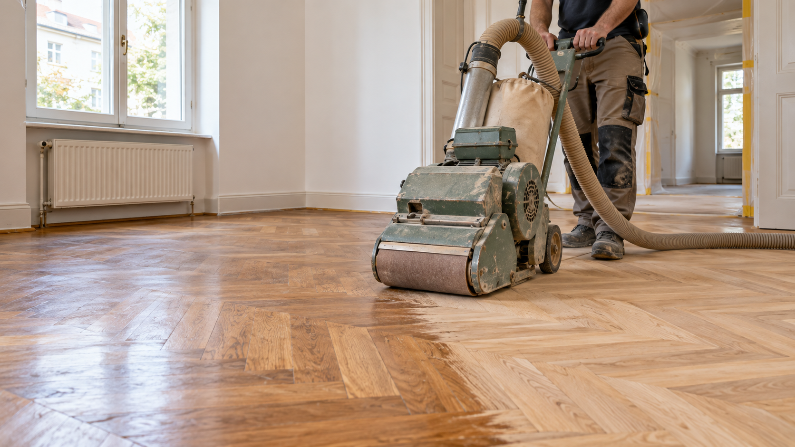
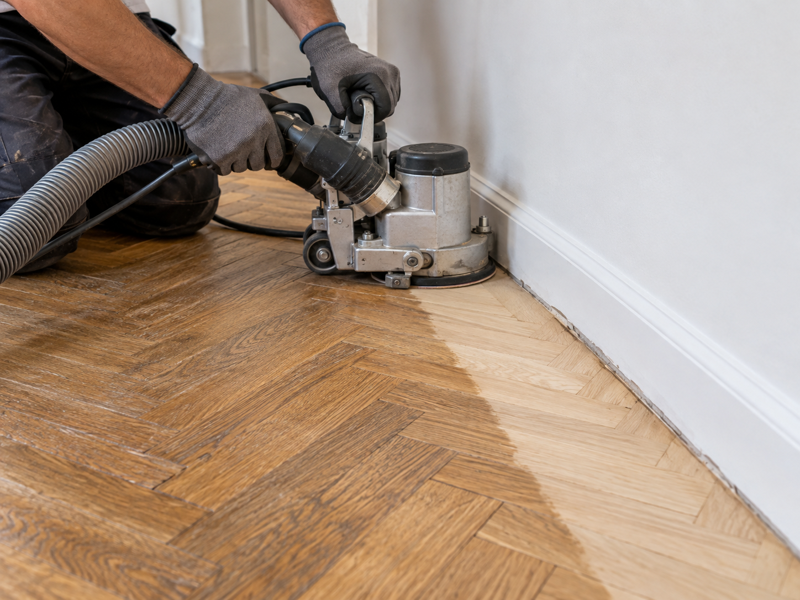

Parketi parandused: kuumvaha ja lihvimine
Väike täke võib vajada kohtparandust, ühtlaselt kulunud põrand aga lihvimist ja uut viimistlust.
Parketi täkete parandus kuumvahaga
Kuumvahaparandus sobib eelkõige üksikutele täketele, väikestele lohkudele, sügavamatele kriimustustele ning servakahjustustele, kui põrand on muus osas stabiilne ja heas seisukorras.

Sobivates toonides kõva vaha sulatatakse kahjustusse, tasandatakse ning viimistletakse ümbritseva pinna järgi. Vajadusel kasutatakse mitut tooni, et vähendada erinevust parketi põhivärvi ja puidumustriga.
Milliseid kahjustusi saab kuumvahaga parandada?
- parketil olevad täkked ja väikesed lohud
- sügavamad kriimustused
- väikesed serva- ja nurgakahjustused
- üksikud kahjustatud kohad muidu heas seisukorras põrandal
Sama tehnikat saab sõltuvalt pinnast kasutada ka laminaadil ja teistel viimistletud puitpindadel. Sobivuse hindame foto või kohapealse ülevaatuse põhjal.
Kuidas kuumvahaparandus käib?
- Puhastame kahjustatud koha. Eemaldame lahtised osad ja mustuse, et täitematerjal kinnituks korralikult.
- Segame sobiva tooni. Kasutame vajadusel mitut vahatooni, et parandus sobituks parketi põhivärvi ja puidumustriga.
- Sulatame vaha kahjustusse. Kõva parandustäide sulatatakse täkkesse spetsiaalse kuumutustööriistaga. Nii täitub kahjustus tihedalt ja kontrollitult.
- Tasandame ja viimistleme. Üleliigne vaha eemaldatakse, pind tasandatakse ning puidusüü ja läike erinevust vähendatakse viimistlusega.
Milline jääb tulemus?
Eesmärk on muuta kahjustus tavalisest vaatamiskaugusest võimalikult märkamatuks ning kaitsta avatud kohta mustuse ja edasise kulumise eest.
Parandatud koht ei pruugi väga lähedalt vaadates muutuda täiesti nähtamatuks, sest parketi toon, muster ja läige võivad valguse käes erineda. Enne töö alustamist anname realistliku hinnangu, millist tulemust on konkreetse kahjustuse puhul võimalik saavutada.
Millal kuumvahast ei piisa?
Kuumvaha ei lahenda põranda konstruktsioonilist probleemi. Teist lahendust võib vaja minna, kui parketilaud on läbi murdunud või ulatuslikult lahti, põrand on niiskuse tõttu paisunud, laud liigub või ühendus on purunenud. Ka paljude kahjustuste või kulunud viimistluskihi puhul võib olla mõistlikum suurem ala taastada.
Sellisel juhul ütleme ausalt, kas mõistlikum on laud vahetada, põrand lihvida või valida muu lahendus. Uue põranda vajaduse korral vaata ka meie parketi paigalduse teenust.
Parketi lihvimine ja uus viimistlus
Lihvimine on mõistlik siis, kui kriimustused, kulumisrajad, tuhmunud lakk või värvierinevused ulatuvad üle suurema pinna. Töö käigus eemaldatakse vana viimistlus ja õhuke puidukiht, tasandatakse servad ning kantakse peale uus lakk, õli või muu kokkulepitud viimistlus.

Millist parketti saab lihvida?
Täispuitparkett
Üldjuhul lihvitav mitu korda, kuid enne tööd kontrollitakse parketi jääkpaksust, laudade kinnitust, naelu ja sügavate kahjustuste ulatust.
Kihiline laudparkett
Lihvimine võib olla võimalik, kui pealmine väärispuidust kulumiskiht on piisavalt paks. Otsus sõltub konkreetsest tootest ja varasemate lihvimiste arvust, mitte ainult laua kogupaksusest.
Mosaiik- ja kalasabaparkett
Sobib sageli taastamiseks, kui detailid on kindlalt aluspinna küljes ja puitu on piisavalt. Lahtised või puuduvad tükid parandatakse enne üldlihvimist.
Laminaat ja LVT
Neid ei lihvita, sest lihvimine eemaldaks pealmise dekoratiiv- või kulumiskihi. Sobiv lahendus on kohtparandus, üksiku elemendi vahetamine või uus kate.
Mida tuleb enne lihvimist kontrollida?
- kas põrand liigub, nagiseb või on aluspinnast lahti;
- kui paks on allesjäänud väärispuidust kulumiskiht;
- kas põrandat on varem lihvitud ja kui sügavad on kahjustused;
- kas niiskuskahjustuse, musta pleki või paisumise põhjus on kõrvaldatud;
- millist tooni, läiget ja hooldusviisi soovitakse pärast viimistlust.

Mida kohtparanduse puhul arvestada?
Kohtparandus säästab tervet põrandat, kuid uus täide või viimistlus võib külgvalguses erineda ümbritseva pinna toonist ja läikest. Õlitatud põrandal võib lokaalne üleminek jääda pehmem, lakitud pinnal on vana ja uue lakikihi piir sageli nõudlikum.
Kui kahjustatud on üks laud, võib parim lahendus olla selle vahetamine. Kui kulumine või kriimustused katavad suure osa ruumist, annab kogu katkematu pinna lihvimine tavaliselt ühtlasema tulemuse kui mitme väikese ala eraldi töötlemine. Liikuva laua, niiskuse või lahtise aluspinna põhjus tuleb lahendada enne kosmeetilist parandust.
Küsi hinnangut foto põhjal
Saada kahjustusest üks lähivõte ja üks foto kaugemalt, et näeksime ka põranda üldist tooni. Lisa võimalusel kahjustuse ligikaudne suurus, põranda materjal, objekti asukoht ja parandamist vajavate kohtade arv.
Fotode põhjal saame öelda, kas kuumvahaparandus sobib ja milline võiks olla oodatav tulemus. Vajadusel täpsustame töö mahu kohapeal.
Korduma kippuvad küsimused
Kas parandatud koht jääb täiesti nähtamatuks?
Eesmärk on sobitada paranduse toon ja muster olemasoleva põrandaga võimalikult hästi. Tavalisest vaatamiskaugusest jääb koht üldjuhul vähe märgatav, kuid lähedalt või külgvalguses võib erinevus olla nähtav.
Kas põrand tuleb parandamiseks üles võtta?
Kohaliku kuumvahaparanduse jaoks tavaliselt mitte. Töö tehakse kahjustatud koha peal.
Kui kaua parandus aega võtab?
Ajakulu sõltub kahjustuste arvust, suurusest ja toonide sobitamise keerukusest. Väikese üksiku täkke parandamine on tavaliselt oluliselt kiirem kui parketilaua vahetamine.
Kas kuumvahaga saab parandada ka laminaati?
Sageli küll. Tulemus sõltub laminaadi pinnamustrist, toonist ja kahjustuse asukohast. Sobivust hindame foto järgi.
Millist parketti saab lihvida?
Täispuitparketti ja piisava puidust kulumiskihiga kihilist parketti saab üldjuhul lihvida. Enne tööd kontrollime kulumiskihi paksust, varasemaid lihvimisi, laudade kinnitust ja kahjustuste sügavust.
Kas laminaati või LVT-põrandat saab lihvida?
Ei. Laminaadi ja LVT pealmine dekoratiiv- või kulumiskiht ei ole lihvimiseks mõeldud. Nende puhul sobib kahjustusest sõltuvalt kohtparandus või elemendi vahetamine.